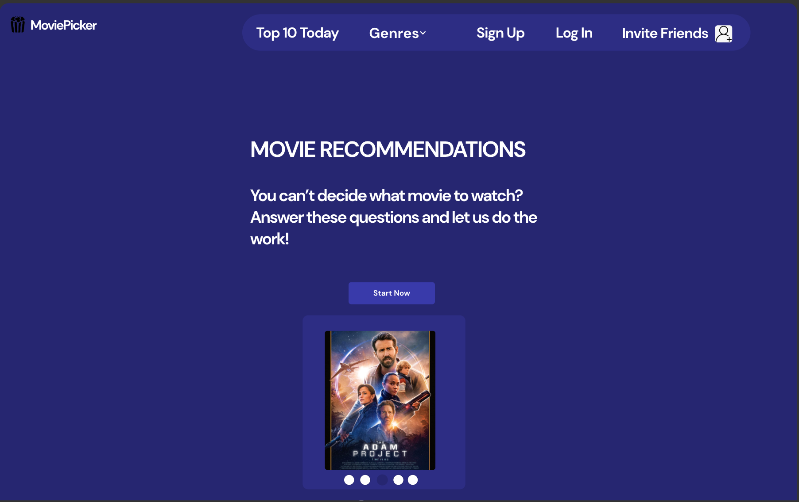
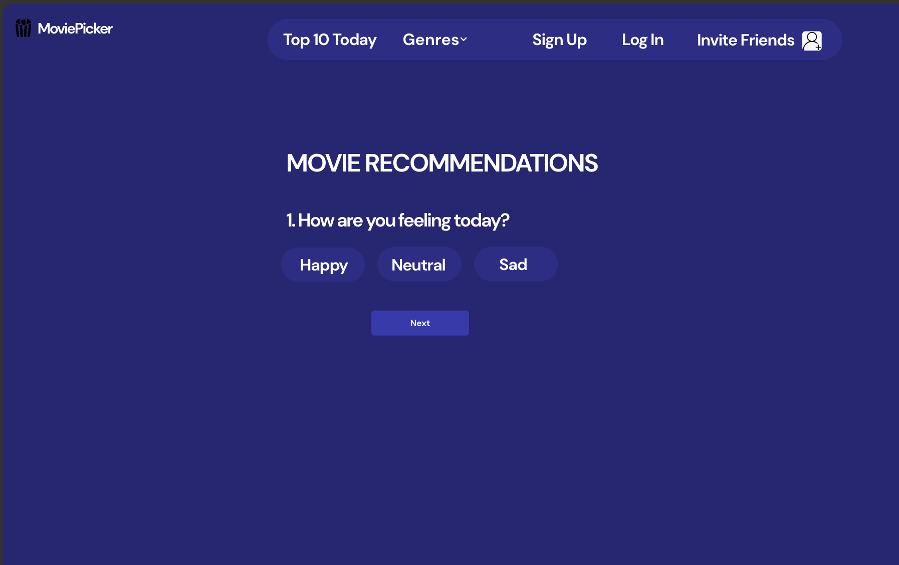
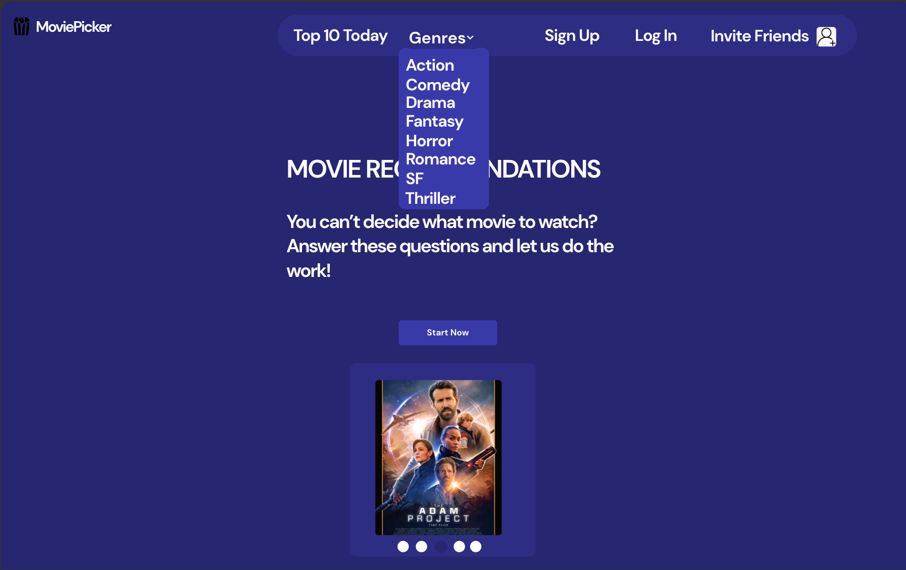
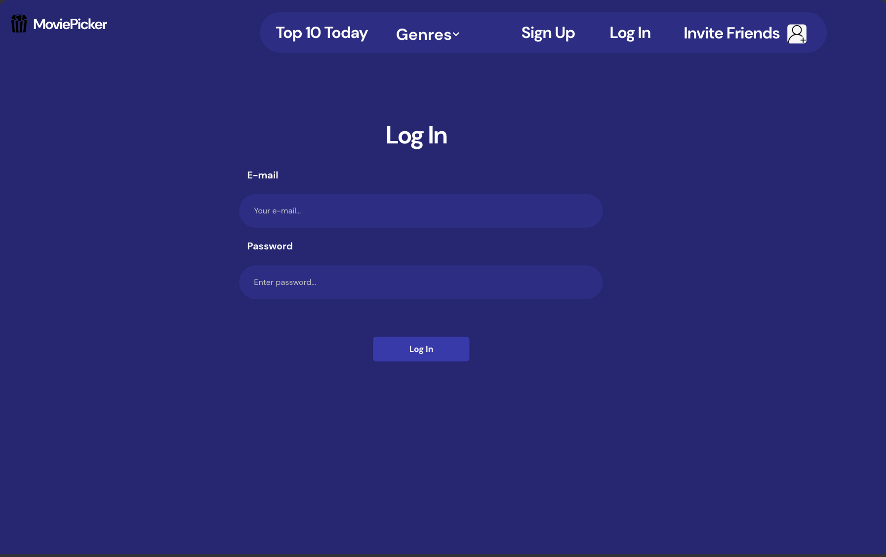
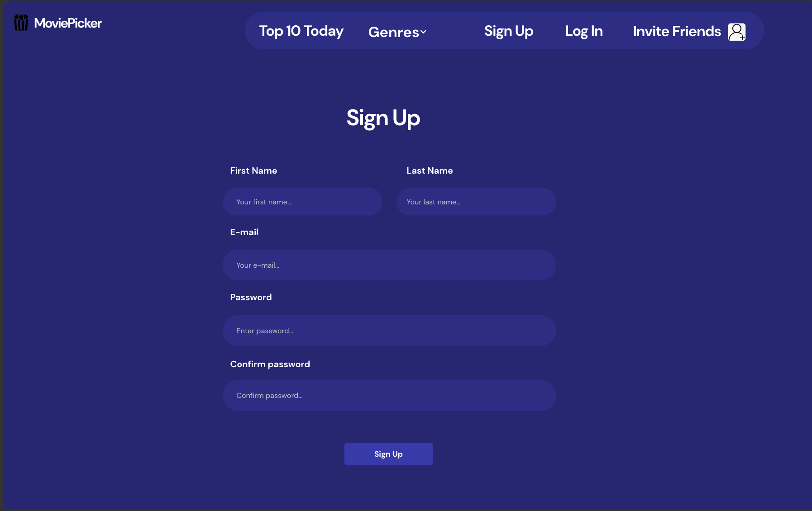

Introduction
1.1 Purpose
The MoviePicker site is a very simple and easy to understand site which offers users movie recommendations based on their choices. Its main purpose is to filter what the user selects and recommend movies that fit those filters.
1.2 Target Audience
This site is very simple, with suggestive menus, making it easy to understand for users. So, the target audience is those who wish to relax and watch a good movie.
1.3 References
For building an easy and attractive interface, this site was used:
w3schools.comDescription
1.1 Product perspective
The product aims at helping people find out what movie to watch when they want and need to relax for a few hours.
1.2 Product functionalities
With this site, the user can take a test which results in a movie recommendation, see a list of movies of a specific genre and share the website with their friends.
1.3 User categories
The website can be used by anyone who has minimum knowledge about navigating on a website, since it is very simple to use and understand.
1.4 Operating environment
MoviePicker is a WEB application which uses HTML and CSS, so it can be run on any browser.
1.5 Design and implementation constraints
The only constraints there are, are the ones for the Invite Friends option in the navigation bar, which allows the user to share the URL and invite people via Facebook and Instagram.
External requirements
1.1 User interface
Main Page
Movie Recommendations Test
Genres
Log In
Sign Up
1.2 Software interface
The website connects to a relational database in order to store the user's data and the list of movies.
1.3 Communication interface
The user and the server both use the HTTP communication protocol to interact.
Functionalities
1.1 Log In/Sign Up
The user who already has an account will enter the e-mail and the password for logging in. The user who doesn't have an account will enter besides e-mail and password, first and last name and will have to retype the password for confirmation in order to create an account. The data the user enters will be sent to the server.
1.2 Genres
The user has the option of choosing which genre they like and after they click the genre they want, there will be displayed a list of movies of the selected genre.
1.3 Top 10 Today
In this section, there is a top which contains 10 popular movies of the day. The top is based on the views the newest movies have.
1.4 Invite Friends
Here, the user can share the URL and invite friends via social media (Facebook and Instagram).
1.5 Movie Recommendations Test
The user will have the option to take a test which consists of answering a few questions by clicking an option or checking some boxes. In the end, there will be a movie recommended based on the selections the user has done.
Non-functional requirements
The WEB application is a safe one, the possible problems coud appear because of the database used.
The application will be protected against the SQL-injection attacks.